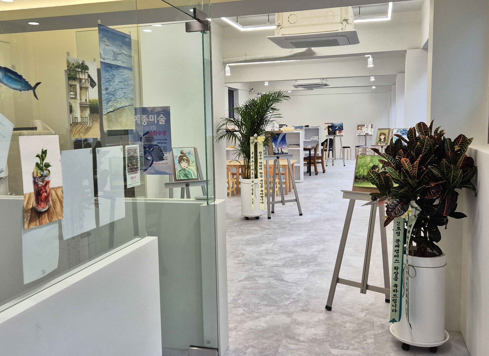
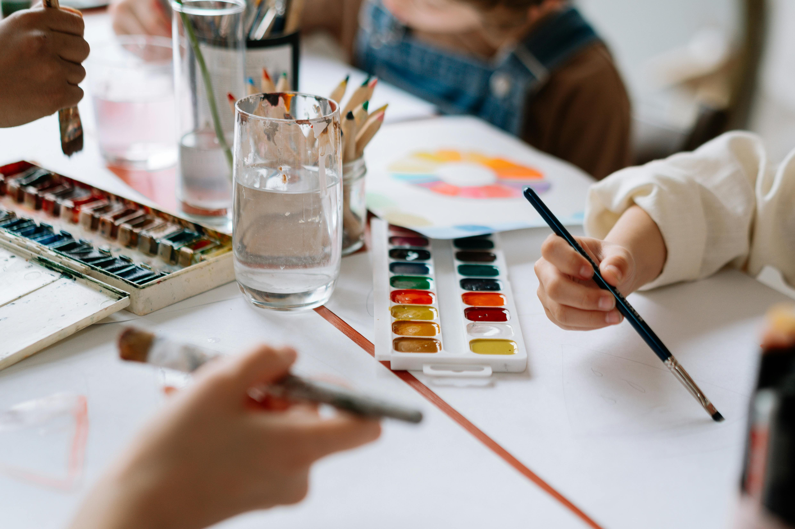
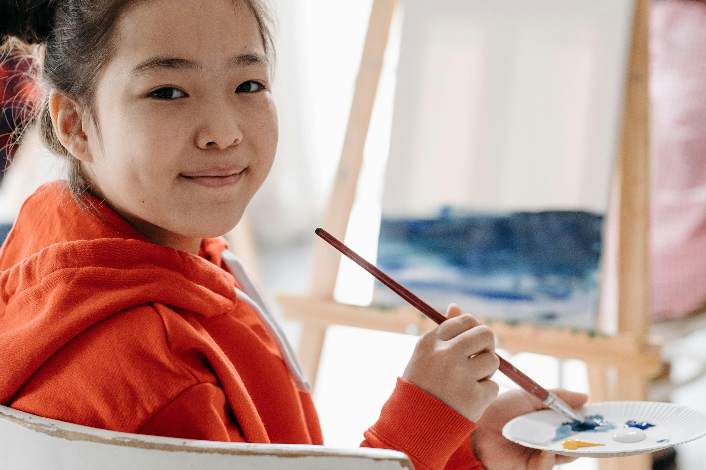
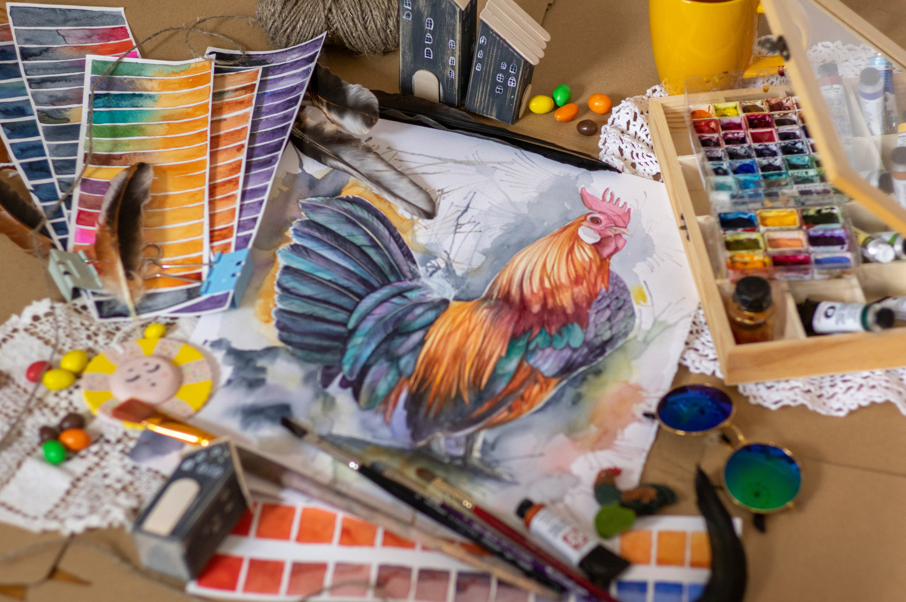
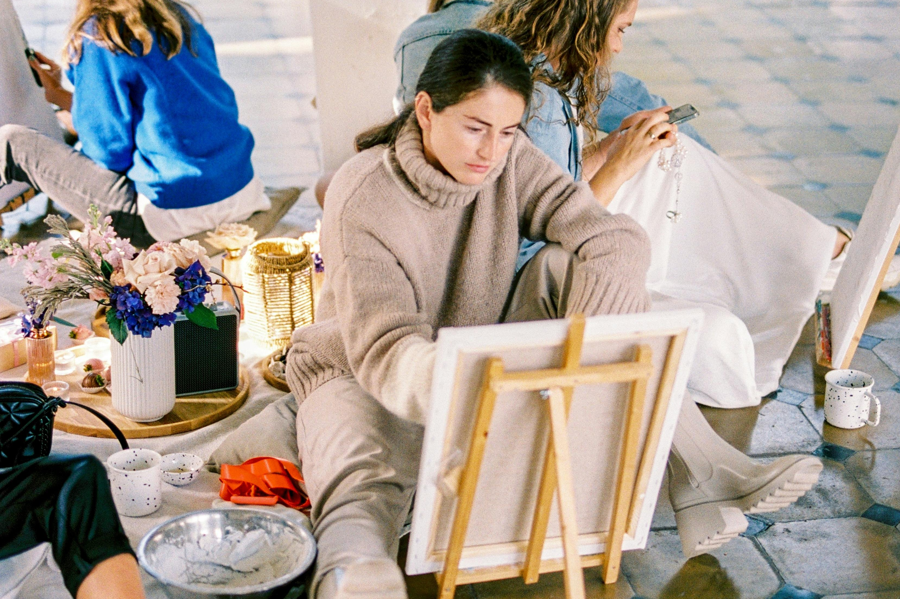
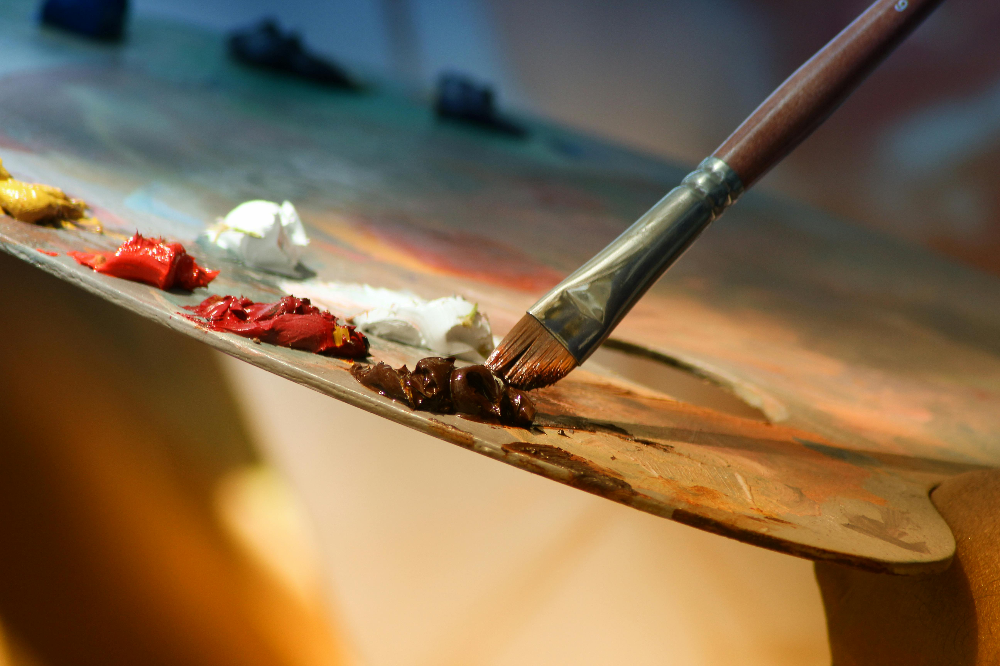
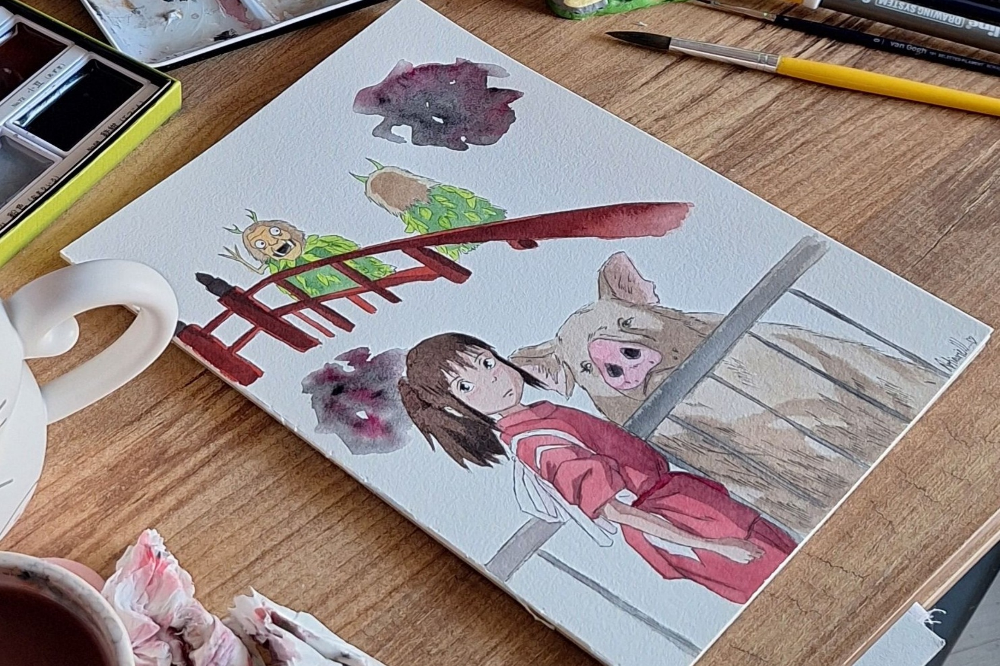
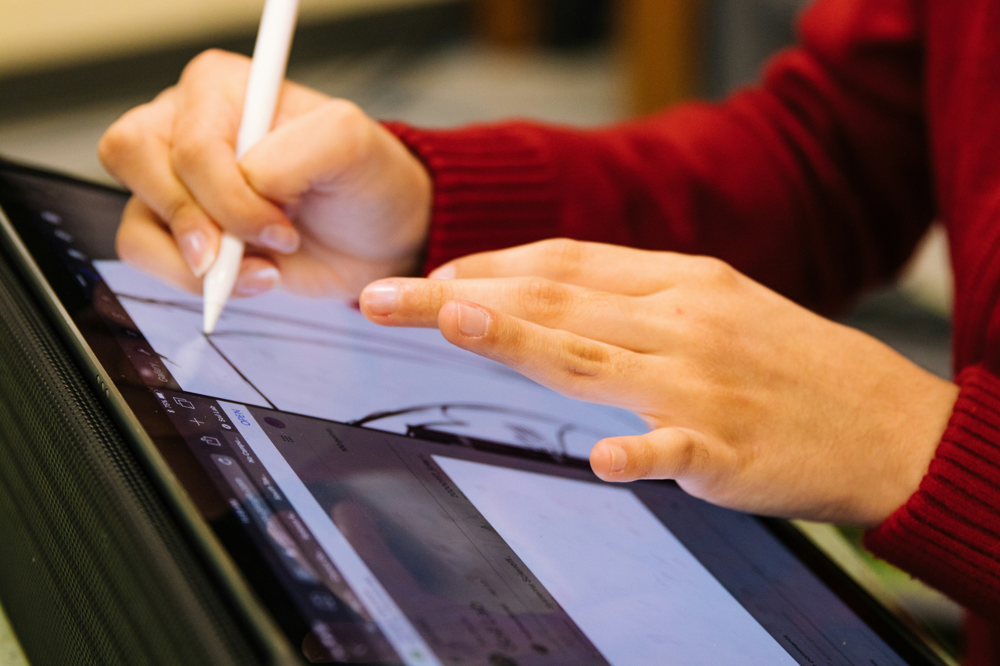
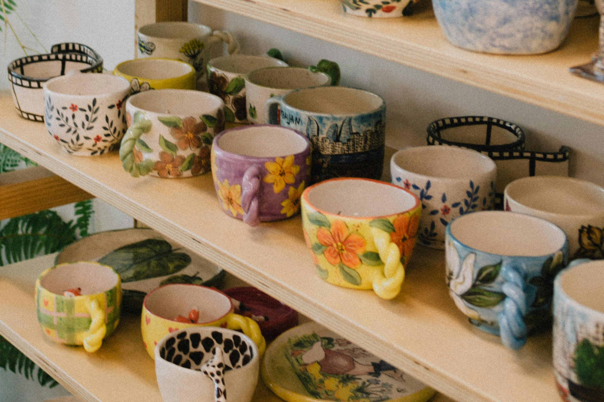

유치부 수업은 아이들의 발달 단계에 맞춘 회화 중심 미술교육입니다.
단순한 만들기 활동을 넘어 그림을 통해 시각적 사고와 표현력을 키우고,
창의적 사고와 정서 발달을 돕습니다.

초등 시기는 관찰력과 표현력, 시각적 창의성을 다지는 중요한 시기입니다.
다양한 시각 언어를 배우고 자신의 생각을 구체적으로 그림으로 표현하는
힘을 기릅니다.

중·고등부는 다양한 주제를 해석하고 논리적으로 시각화하는 힘을 기르는
심화 표현 수업입니다. 표현 능력과 미술적 사고력을 함께 발전시킵니다.
다양한 주제를 자신만의 시각으로 해석하고 작품으로 표현합니다.
주제 이해와 화면 구성, 표현력 향상을 통해 미술대회 작품을
준비할 수 있도록 지도합니다.

미술 분야에 관심이 높은 학생을 위한 수업입니다.
소묘와 수채화를 깊이 있게 배우며 관찰력과 표현력을 발전시키고,
학생의 수준과 목표에 맞춰 전공 탐색과 실기 능력 향상을 돕습니다.

본격적인 입시 준비에 앞서 기초 실력을 정리하고 입시 실기에 적응하는
과정입니다. 표현력과 해석력, 구성력을 다듬어 입시에 대비할 기반을
다집니다.

그림과 이야기, 장면을 연결하는 창작 활동을 통해 상상력과 표현력을
기릅니다. 즐겁게 그림을 그리면서 자신만의 아이디어를 시각적으로
풀어내는 힘을 키웁니다.

태블릿과 전용 드로잉 소프트웨어를 활용해 디지털 창작 능력을 기릅니다.
다양한 회화와 일러스트 표현을 익히며 아이디어를 디지털 작품으로
완성하는 과정을 경험합니다.
그림을 처음 시작하는 분부터 오랜만에 미술을 다시 시작하고 싶은 분까지
누구나 편하게 즐길 수 있는 회화 중심 수업입니다.
자신만의 작품을 완성하며 그림 그리는 즐거움을 느낄 수 있습니다.

도자기 표면에 색과 무늬를 표현해 자신만의 작품을 완성하는 수업입니다.
색채 감각과 섬세한 표현력을 기르며 일상에서 예술을 경험하는
창작의 즐거움을 배웁니다.